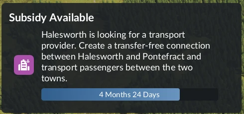
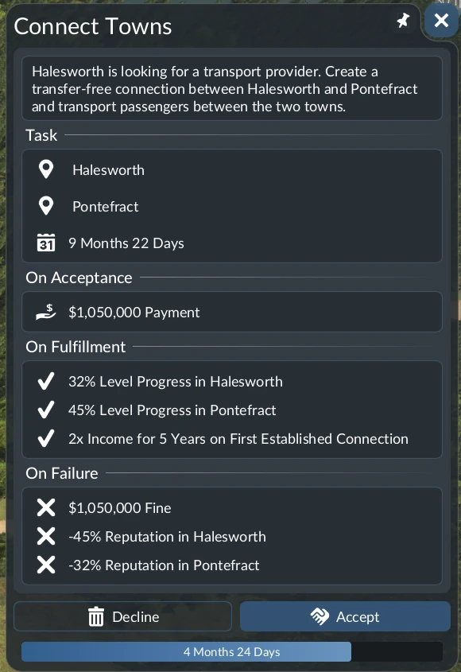
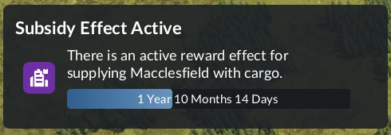
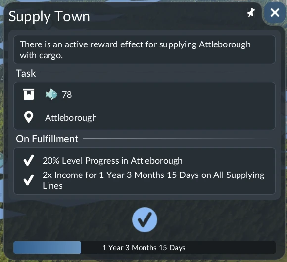
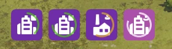

Subsidy Enhancements
A subsidy offer is withdrawn after about six months, and a fulfilled subsidy's reward runs for years, but the game shows neither time left, and every subsidy's ring in the notification list looks the same. This mod adds both countdowns and colours the rings by phase.
A subsidy goes through three phases: an offer, which you accept or decline; in progress, once accepted, with the game's countdown to fulfil it; and, once fulfilled, a reward that runs for a set time. The game shows a countdown only while it is in progress.
Offer Countdown
Setting: Offer Countdown · On by default
- 14 months 24 days left to accept; the bar empties as the offer runs out.

- 1The game's calendar line: 9 months 22 days to fulfil the subsidy once accepted, not the time left to accept.
- 2The time left to accept, under Decline and Accept.
Why
A subsidy offer stays open for about six months, then it is withdrawn with a Subsidy Missed notification. The game never shows how long you have left to accept it, and the calendar line on the offer is easily taken for that: it is the time you get to fulfil the subsidy once you accept.
What it does
An offer you haven't accepted shows its time left as a bar, drawn like the countdown the game shows once a subsidy is accepted: in the Subsidy Available notification and in the subsidy's window, under Decline and Accept. The bar empties as the offer runs out.
Good to know
- An offer lasts six months, give or take 30 days, so the time left differs from offer to offer.
- The calendar line on an offer still shows the time you get to fulfil it once accepted.
Reward Countdown
Setting: Reward Countdown · On by default
- 11 year 10 months 14 days of the reward left, out of five years.

- 1The game names the time left in the reward's line.
- 2The bar shows how much of the reward is left, under the completed mark.
Why
Once a subsidy is fulfilled, its reward runs for a set time: 2x income on the supplying lines, or on the connection, for five years. Its Subsidy Effect Active notification shows no time left, so you can't tell at a glance when the extra income ends.
What it does
A fulfilled subsidy shows a bar with its reward's time left, in its notification and in its window, under the game's completed mark. The bar empties as the reward runs out.
Good to know
- A subsidy for transporting workers has a shorter reward: 3 months.
Subsidy Ring Colors
Setting: Subsidy Ring Colors · On by default
- 1Green: two fulfilled subsidies whose rewards run.
- 2Yellow: accepted and in progress.
- 3White: an offer, as in the game.

- 1The yellow ring: this subsidy is in progress.
- 2The game's card: Subsidy in Progress, 7 months left to fulfil it.
Why
In the notification list, a subsidy's icon has a ring that fills with its time left. The ring is white whether the subsidy is an offer, in progress or paying its reward, and the icon is the same in every phase, so you hover each one to tell them apart.
What it does
The ring around an accepted subsidy's icon is yellow while the subsidy is in progress and green while its reward runs. Offers keep the white ring.
Good to know
- Only the colour changes: the ring fills as in the game, and hovering a tile shows the game's card.
Settings
Choosing a save's mods: the gear next to Subsidy Enhancements → Settings. Each save keeps its own choice. Off turns a feature off completely.
| Setting | Default | What it does |
|---|---|---|
| Offer Countdown | On | A subsidy offer shows how long it stays on offer, in its notification and in its window. |
| Reward Countdown | On | A fulfilled subsidy shows how long its reward runs, in its notification and in its window. |
| Subsidy Ring Colors | On | Accepted subsidies' notification rings: yellow while in progress, green while the reward runs; offers stay white. |
| Logging | Off | Writes the mod's messages to the game log (stdout.txt), for bug reports. |
More
Compatibility
Works with any map and any other mod. Only the display changes: subsidies, their timing and their rewards stay as the game sets them. The mod saves nothing with your game, so it can be removed at any time.